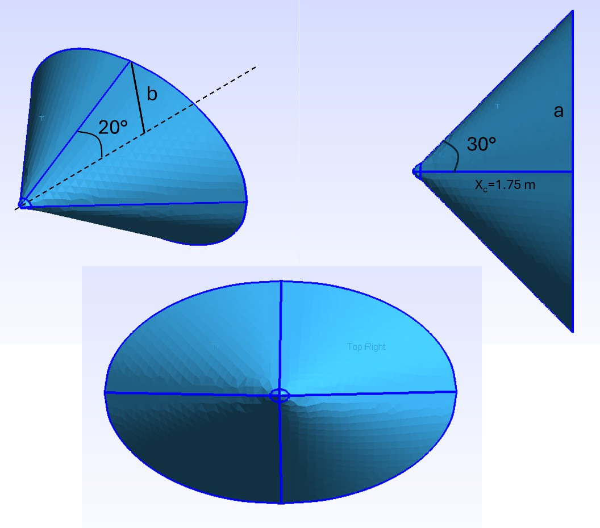
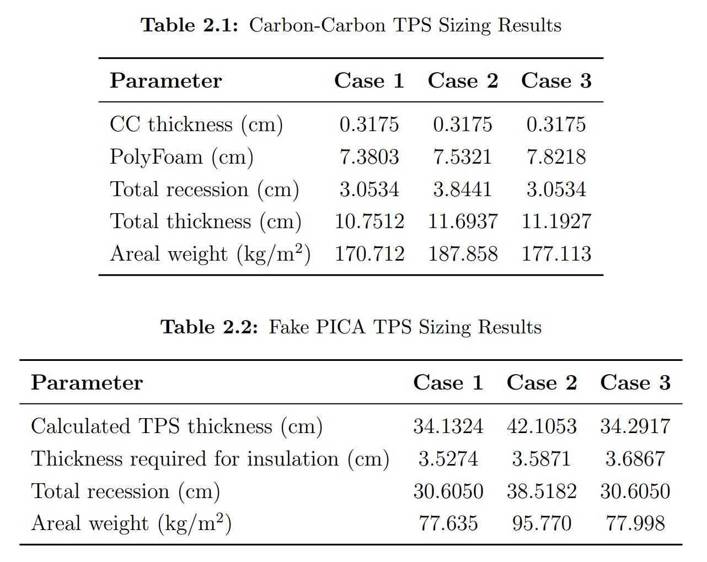

01 · Brief
Estimating hypersonic heating and sizing thermal protection from trajectory data.
This project evaluated the thermal environment of a hypersonic projectile by computing stagnation point heating, aerodynamic heating at selected body locations, total heat load, and thermal protection system sizing requirements.
The analysis combined atmospheric properties, normal and oblique shock relations, Fay-Riddell and Sutton-Graves heating estimates, reference-temperature methods, and finite-difference thermal modeling to compare Carbon-Carbon and PICA-like TPS concepts.

02 · Problem
TPS sizing depends on peak heat flux, integrated heat load, ablation, and bondline limits.
Designing a TPS is not just a matter of finding the maximum heat flux. The material has to survive the full thermal history, including the accumulated heat load, recession, conduction into the structure, and the allowable bondline temperature.
The project required turning a trajectory into engineering quantities that matter for design: heating rate, total heat load, required insulation thickness, recession depth, areal weight, and sensitivity to uncertainty margins.
The difficult tradeoff was balancing thermal protection, recession margin, bondline temperature limits, and areal weight across very different material behaviors.
03 · Approach
Building an end-to-end aerothermal workflow from flight condition to TPS thickness.
- Processed trajectory and atmospheric data to determine local flight conditions throughout the heating event.
- Computed stagnation point heating using engineering heating correlations, including Fay-Riddell and Sutton-Graves style estimates.
- Estimated aerodynamic heating at selected midbody locations using shock relations and reference-temperature methods.
- Integrated heat flux over time to obtain total heat load for stagnation and surface heating cases.
- Applied finite-difference thermal response modeling to size TPS thickness against a bondline temperature constraint.
- Compared Carbon-Carbon and PICA-like material systems across thickness, recession, insulation need, and areal weight.

04 · Outputs
What the project produced.
- A repeatable MATLAB workflow for stagnation point heating, surface aerodynamic heating, and TPS sizing.
- Heat flux and heat load histories for the stagnation point and two reference body locations.
- TPS sizing tables for Carbon-Carbon and PICA-like material systems.
- A comparison of material tradeoffs showing that the PICA-like material was much thicker but less than half the areal weight of the Carbon-Carbon case.
- Sensitivity insight showing that aerodynamic heating uncertainty had the strongest influence on final TPS sizing.
- A final report connecting aerothermal theory, numerical implementation, and design interpretation.
05 · Takeaways
What I took away from the project.
This project helped me connect aerothermodynamic theory to actual design quantities. Heat flux plots are useful, but the design decision comes from understanding how heating, recession, conduction, mass, and material behavior interact.
It also reinforced the importance of traceable assumptions. TPS sizing changes quickly when heating margins, initial temperature, material properties, or bondline limits change, so the calculation has to make those assumptions clear.